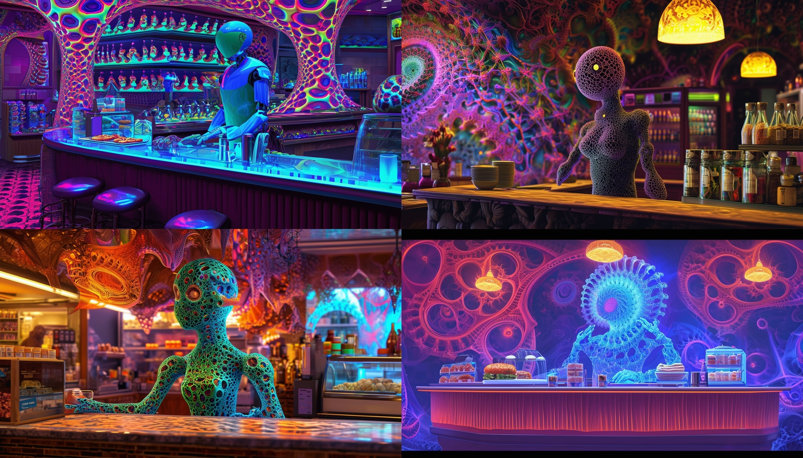
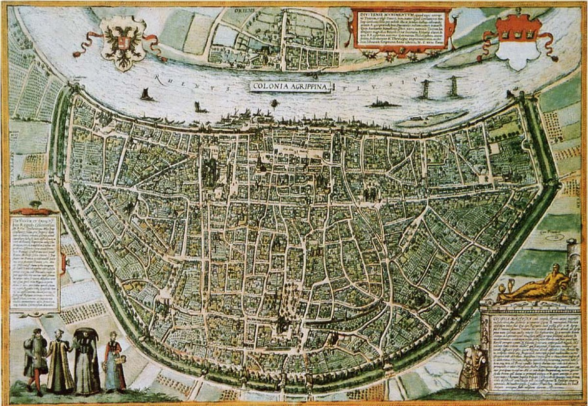
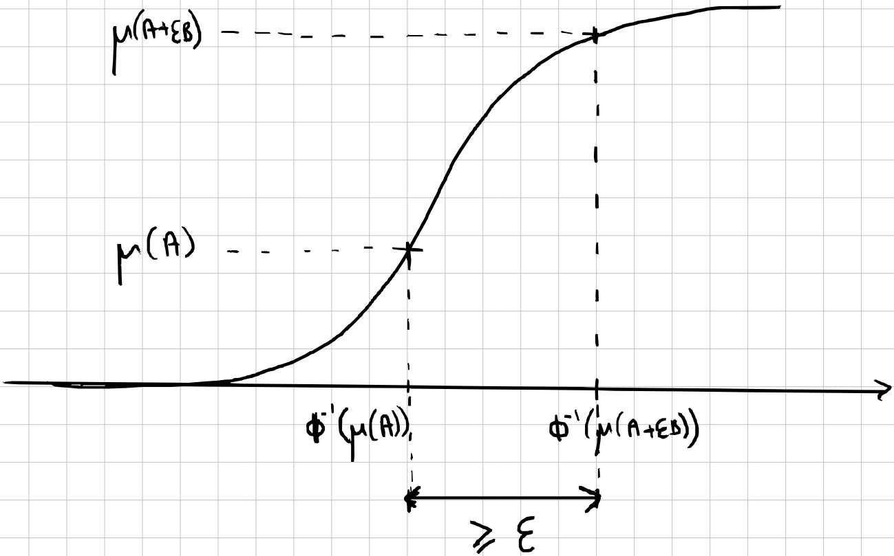
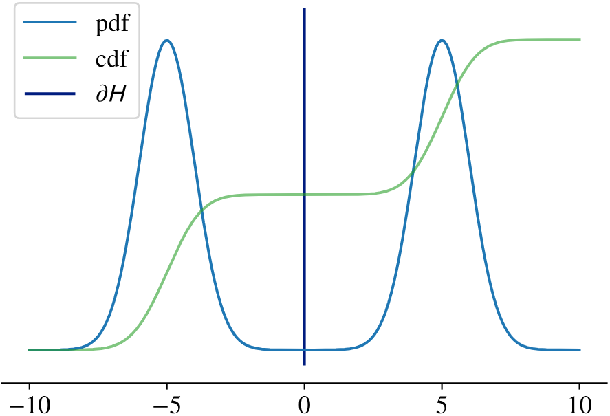
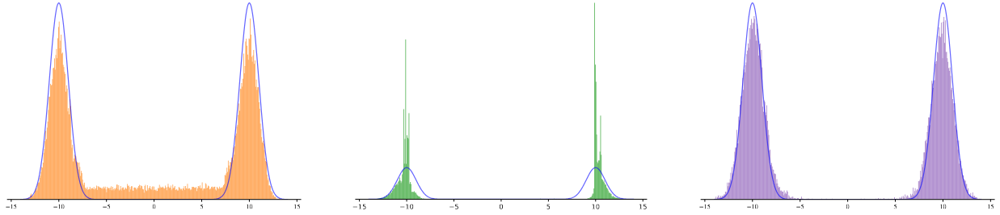
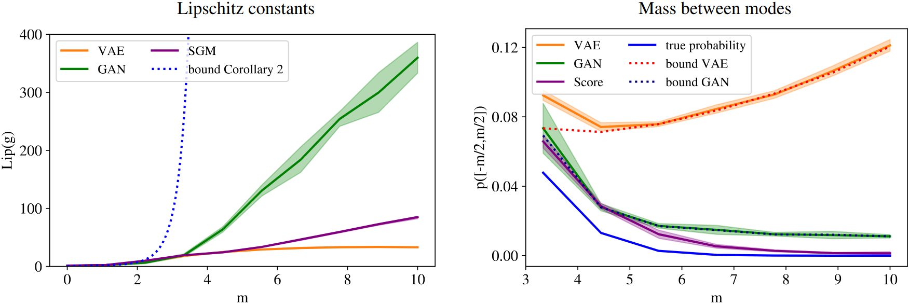
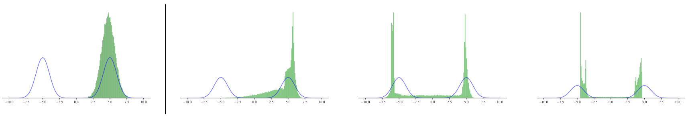
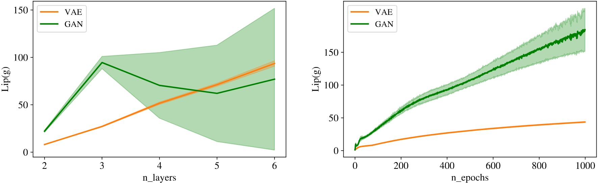

Can Push-forward Generative Models Fit Multimodal Distributions ?
- Antoine Salmona
- Centre Borelli
- ENS Paris Saclay, France
- Agnès Desolneux
- Centre Borelli, CNRS
- ENS Paris Saclay, France
- Julie Delon
- MAP5, Université Paris Cité, France
- Institut Universitaire de France (IUF)
- Valentin De Bortoli
- Center for Sciences of Data, CNRS
- ENS Ulm, France
Plan
- Generative modeling
- a. C'est quoi ?
- b. Pourquoi c'est dur ?
- pad
- Push-forward model
- pad
- Inégalité isopérimétrique
- a. Cas simple
- b. Extension
- pad
- Inégalité isopérimétrique pour push-forward models
- a. Présentation
- b. Conséquences
- pad
1. Generative Modeling
a. C'est quoi ?
- Dataset : $\{x_1, \ldots, x_N\} \sim \nu(x)$
- But : sampler de nouveaux échantillons de $\nu(x)$
- pad

1. Generative Modeling
b. Pourquoi c'est dur ?
pad
- Estimateur paramétrique $$\nu_{\theta}(x) = \frac{e^{-f_{\theta}(x)}}{Z_{\theta}}$$
- Maximum de vraisemblance
$$\max_{\theta} \sum_{i=1}^N \log \nu_{\theta}(x_i)$$
$$\log \nu_{\theta}(x_i) = -f_{\theta}(x_i) - \textcolor{red}{\log Z_{\theta}}$$
2. Push-forward Generative Models
Transformer une distribution connue en notre distribution cible
- Distribution prior, samplable : $\quad\mu_p = \mathcal{N}(0, \mathrm{Id}_p)$
- Mapping déterministe, inversible : $g_{\theta}$ (réseau de neurones)
- Sampling procedure : $$x \sim \mu_p\,,\quad y=g_{\theta}(x)$$
- Loi de y :
$$\nu(y) = \mu(g_{\theta}^{-1}(y)) \bigg\lvert \det{\frac{\partial g_{\theta}^{-1}}{\partial y}} (y) \bigg\rvert = \frac{\mu(x)}{\big\lvert \det{\frac{\partial g_{\theta}}{\partial x}} (x) \big\rvert}$$
$$\nu_{\theta} = g_{\theta \#}\mu_p$$
- VAE, GAN, NF
- variational lower bound, minimax zero sum game Nash equilibrium, exact likelihood
3. Inégalité isopérimétrique
a. Forme basique
- Inégalité entre périmètre et surface
pad

- pad
- $p^2 \geq 4 \pi S\quad\quad$ (égalité = disque)
- pad
- $S^3 \geq 36 \pi V^2\quad$ (égalité = sphère)
3. Inégalité isopérimétrique
b. Extension à des surfaces généralisées
pad
- $(\mathcal{X}, d, \gamma)$ espace mesurée, $A$ borélien de $\mathcal{X}$ (évènement)
- r-voisinage (ouvert) de $A$ : $$A_r = \{ x \in \mathcal{X}, d(x, A) < r \}$$
- "périmètre" de $A$ : $$\gamma^{+}(\partial A) = \underset{r \, \rightarrow \, 0}{\lim \inf} \; \frac{\gamma(A_r) - \gamma(A)}{r}$$
- fonction isopérimétrique $\mathcal{I}_{\gamma}$ de $\gamma$ : $$\gamma^{+}(\partial A) \geq \mathcal{I}_{\gamma}(\gamma(A))$$
3. Inégalité isopérimétrique
b. Extension à des surfaces généralisées
- Mesure gaussienne $\mu_p$ dans $\mathcal{X} = \mathbb{R}^p$ :
\[\begin{aligned} d\mu_p(x) &= (2\pi)^{-\frac{n}{2}}e^{-\frac{-|x|^2}{2}} dx \\
\mu_p(A) &= \int_A d\mu_p(x)
\end{aligned} \]
"Aire" de A = probabilité que $Z \sim \mu_p = \mathcal{N}(0, \mathrm{Id}_p)$ soit dans $A$
- Fonction isopérimétrique de $\mu_p$ :
$$\mathcal{I}_{\mu_p} = \phi \circ \Phi^{-1},$$
avec $$\phi(x) = \frac{e^{-\frac{x^2}{2}}}{\sqrt{2\pi}} \quad\text{et}\quad \Phi = s \mapsto \int_{-\infty}^{s}\phi(x)dx = \mu_1(]-\infty, s[)$$
3. Inégalité isopérimétrique
b. Extension à des surfaces généralisées
- Mesure gaussienne $\mu_p$ dans $\mathcal{X} = \mathbb{R}^p$ :
\[\begin{aligned} d\mu_p(x) &= (2\pi)^{-\frac{n}{2}}e^{-\frac{-|x|^2}{2}} dx \\
\mu_p(A) &= \int_A d\mu_p(x)
\end{aligned} \]
"Aire" de A = probabilité que $Z \sim \mu_p = \mathcal{N}(0, \mathrm{Id}_p)$ soit dans $A$

4. Inégalité isopérimétrique pour push-forward models
a. Et alors ?
- On a
- Une mesure engendrée par la mesure gaussienne "pushed-forward" :
- Une mesure engendrée par la mesure gaussienne "pushed-forward" : $$\nu_{\theta} = g_{\theta \#}\mu_p$$
- Une inégalié isopérimétrique pour la mesure gaussienne : $$\mu_p^{+}(\partial A) \geq (\phi \circ \Phi^{-1})(\mu_p(A))$$
pad
- On veut
- Une mesure engendrée par la mesure gaussienne "pushed-forward" :
- Une inégalité sur la mesure "pushed-forward" :
$$\operatorname{Lip}(g_{\theta})(g_{\theta \#}\mu_p)^{+}(\partial A) \geq (\phi \circ \Phi^{-1})(g_{\theta \#}\mu_p(A))$$
4. Inégalité isopérimétrique pour push-forward models
a. Et alors ?
- Une mesure engendrée par la mesure gaussienne "pushed-forward" :
- Une inégalité sur la mesure "pushed-forward" :
$$\operatorname{Lip}(g_{\theta})(g_{\theta \#}\mu_p)^{+}(\partial A) \geq (\phi \circ \Phi^{-1})(g_{\theta \#}\mu_p(A))$$
- Une mesure engendrée par la mesure gaussienne "pushed-forward" :
- S'écrit aussi, pour tout $r \geq 0$ :
$$(g_{\theta \#}\mu_p)(A_r) \geq \Phi\left(\frac{r}{\operatorname{Lip}(g_{\theta})} + \Phi^{-1}\left(g_{\theta \#}\mu_p(A)\right)\right)$$

4. Inégalité isopérimétrique pour push-forward models
a. Et alors ?
pad
- $g_{\theta \#}\mu_p$ multimodal $\Rightarrow$ $\operatorname{Lip}(g_{\theta})$ large
Mais $\operatorname{Lip}(g_{\theta})$ terme de régularisation
4. Inégalité isopérimétrique pour push-forward models
b. Expérimentations
pad

- VAE
- modes gaussiens
- interpole fortement entre eux
- GAN
- mode collapse
- pas d'interpolation
- SGM
- modes gaussiens
- pas d'interpolation
4. Inégalité isopérimétrique pour push-forward models
b. Expérimentations
pad

- $\operatorname{Lip}(\operatorname{GAN}) \gg \operatorname{Lip}(\operatorname{VAE})$
- GAN & VAE saturent la borne inférieure
- SGM appelée plusieurs fois $\Rightarrow$ compromis gagnant
4. Inégalité isopérimétrique pour push-forward models
b. Expérimentations
pad
Régularisation $\;\operatorname{Lip}(\operatorname{GAN})$

mode dropping $\rightarrow$ mode collapse
4. Inégalité isopérimétrique pour push-forward models
b. Expérimentations
pad

- Instabilité croissante avec profondeur et temps d'entraînement